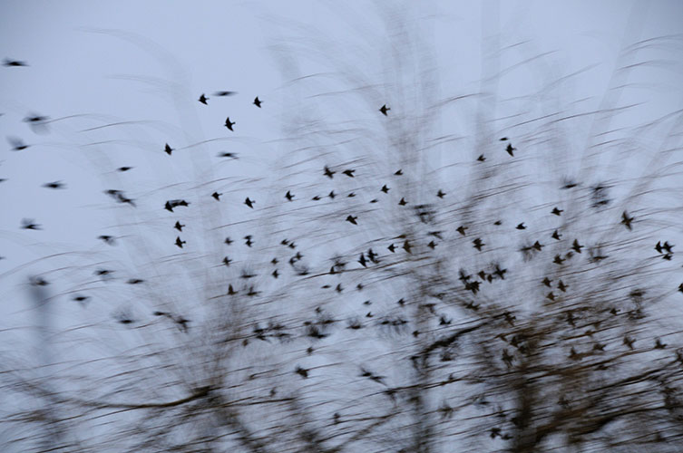

	<div id="oneCol" class="row">
    <div class="large-12 columns">
    	<div class="medium-10 medium-offset-1 end columns">
      <h3>Between Spaces</h3>
			<p>Together with artist Claire Christie Sadler we held an exhibition at West Ox Arts, Bampton, November 2011.  <br>
     I tried to capture images that showed places, people and things whose existence may be transient, unpredictable, strange or mysterious-floating and held in those spaces between. <br>
     Claire's focus in her drawings was the place between two spaces-an edge, a boundary, a defining line and the relationship between the two areas it divides. </p>
		</div>
		<div class="center">
        <a href="002.html" title="View next between spaces ... spaces between photograph"></a>

  	<span class="links"><a href="002.html">next</a></span>
    </div>
	</div>
</div>

